Թեստ 37
30:00
1. «Ճանապարհային երթևեկության անվտանգության ապահովման մասին» ՀՀ օրենքի համաձայն` թեթև մարդատար ավտոմոբիլ է համարվում`
2. «Ճանապարհային երթևեկության անվտանգության ապահովման մասին» ՀՀ օրենքի համաձայն` մեխանիկական տրանսպորտային միջոցի վարորդը պարտավոր է իր մոտ ունենալ`
3. Տրանսպորտային միջոցների շահագործումն արգելվում է, եթե`
4. Մոտոցիկլների շահագործումն արգելվում է, եթե`
5. Հանդիպակաց երթևեկության դեպքում կտրուկ վայրէջքի վրա անհրաժեշտ է ճանապարհը զիջել`
6. Թույլատրվու՞մ է արդյոք ուղևորներ նստեցնելու համար կանգ առնել այս նշանով նշված գոտու վրա:
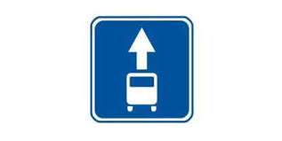
7. Խաչմերուկը վերջինը կանցնի`
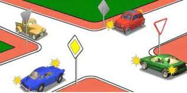
8. Կոշտ կցիչով քարշակման ժամանակ հեռավորությունը տրանսպորտային միջոցների միջև չպետք է գերազանցի`
9. Նշաններից ո՞րի ազդեցությունն է տարածվում միայն այն գոտում, որի վրա կախված է
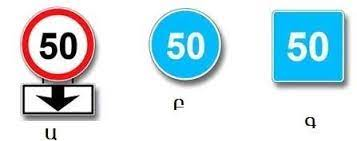
10. Ձախ շրջադարձ կատարելիս պարտավոր եք զիջել ճանապարհը
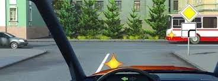
11. Երթևեկությունը թույլատրվում է`
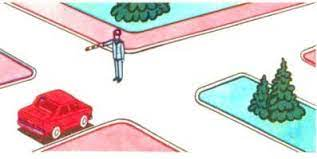
12. Գծանշման այս գծերից ո՞րն է օգտագործվում դարձափոխային երթևեկությամբ գոտիները նշելու համար:
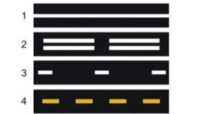
13. Ո՞ր դեպքում վարորդը պետք է տա նախազգուշացնող ազդանշան` կանգառ կատարելուց առաջ:
14. Թույլատրվում է արդյո՞ք բեռնատարից առաջ անցնելուց հետո շարունակել երթևեկությունը այս գոտով:
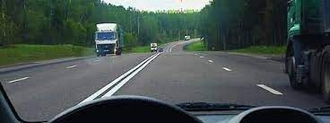
15. Կարելի՞ է նշված հետագծով երթևեկելու համար ձեռքով տալ նախազգուշացնող ազդանշան:
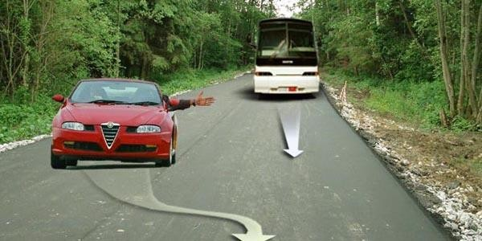
16. Ո՞ր հետագծով իրավունք ունի վարորդը կատարել ձախ շրջադարձն այս իրավիճակում
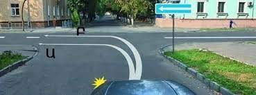
17. Թույլատրվում է արդյո՞ք կցորդ քարշակող թեթև մարդատարի երթևեկությունն այս խաչմերուկում ուղիղ ուղղությամբ
18. Ձախ շրջադարձն այս իրադրությունում կատարելիս պետք է
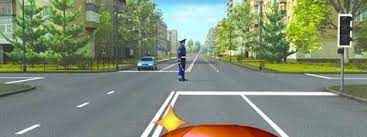
19. Վարորդը միացնել շրջադարձի լուսային ցուցիչն այս իրավիճակում
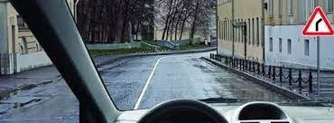